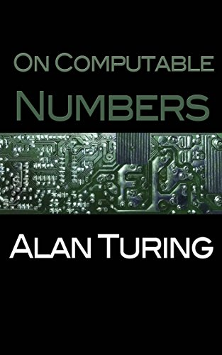

Alan Mathison Turin fue un matematico, lógico, informático teórico, criptógrafo, filósofo y biólogo teórico británico, considerado como uno de los padres de la computación y precursor de la informatica moderna.
Alan Turing publica su artículo "On Computable Numbers, with an Application to the Entscheidungs problem", que establece las bases teóricas de la computación.

Durante la Segunda Guerra Mundial, Turing trabaja en Bletchley Park, donde contribuye significativamente al descifrado de los códigos enigma utilizados por las fuerzas alemanas.
Turing diseña la ACE (Automatic Computing Engine), uno de los primeros diseños de computadoras electrónicas de propósito general.
Alan Turing publica un artículo titulado "Computing Machinery and Intelligence", en el que propone el famoso "Test de Turing" para evaluar la inteligencia artificial
Turing es condenado por "conducta indecente" debido a su homosexualidad, lo que afecta significativamente su vida personal y profesional.
Alan Turing fallece a los 41 años en circunstancias trágicas, envenenado por cianuro. Turing había sido condenado por "conducta indecente" en 1952 debido a su homosexualidad, lo que tuvo un impacto devastador en su vida.